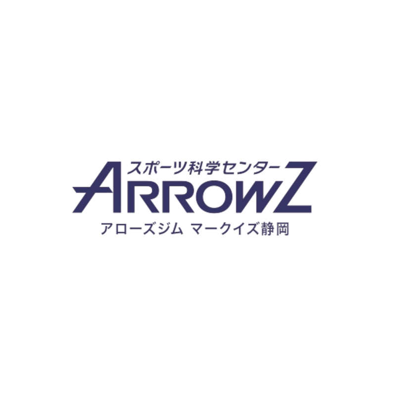
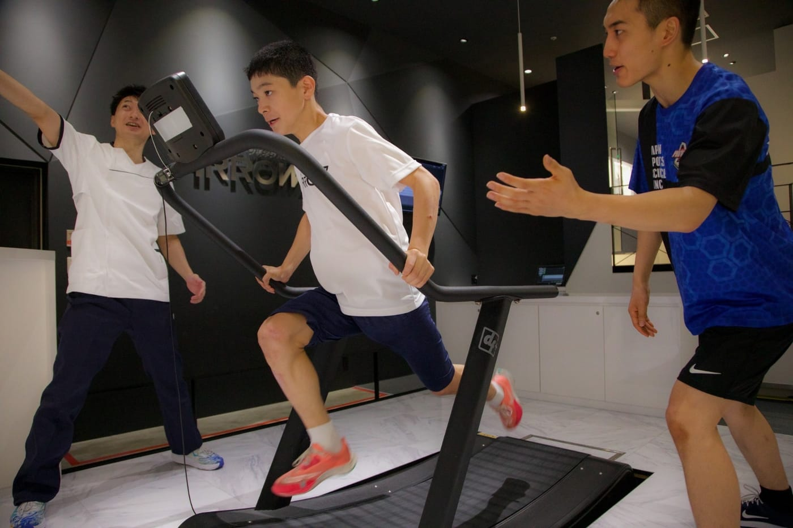
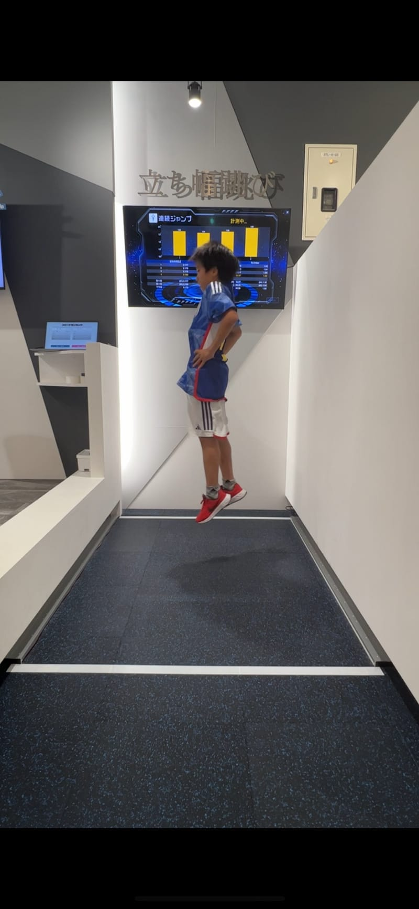
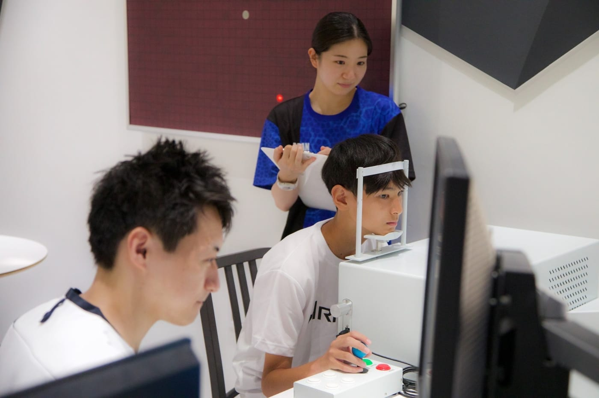
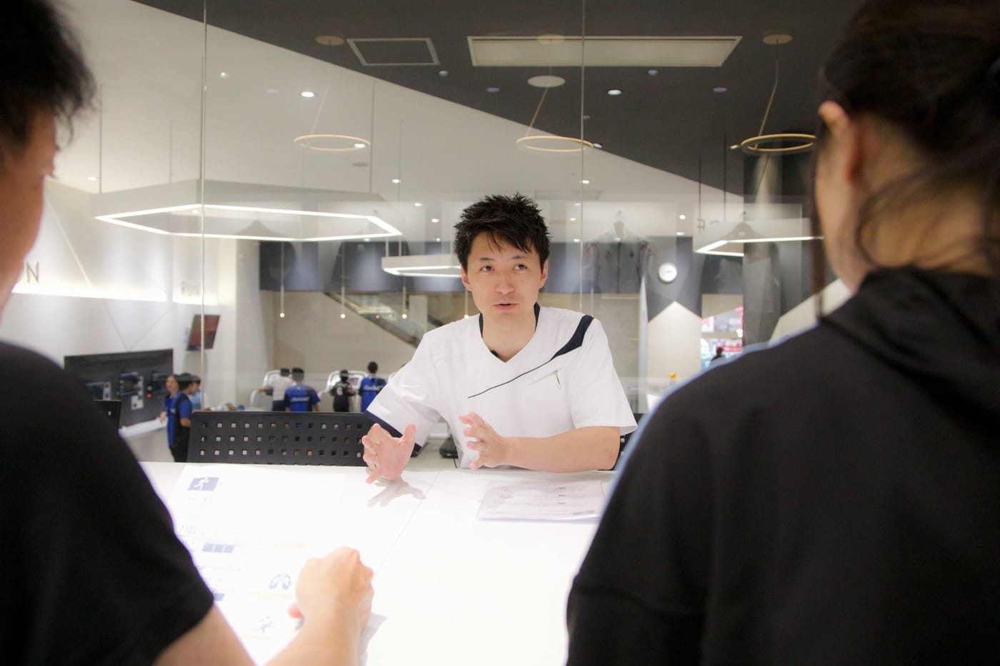
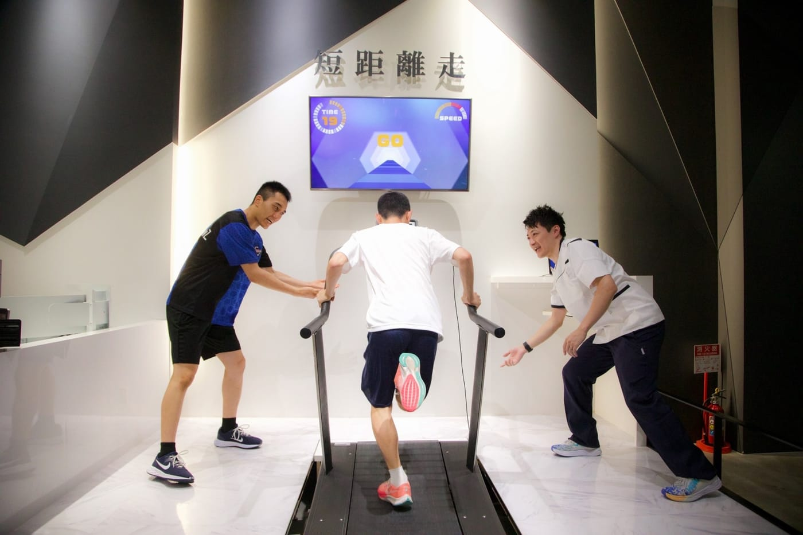
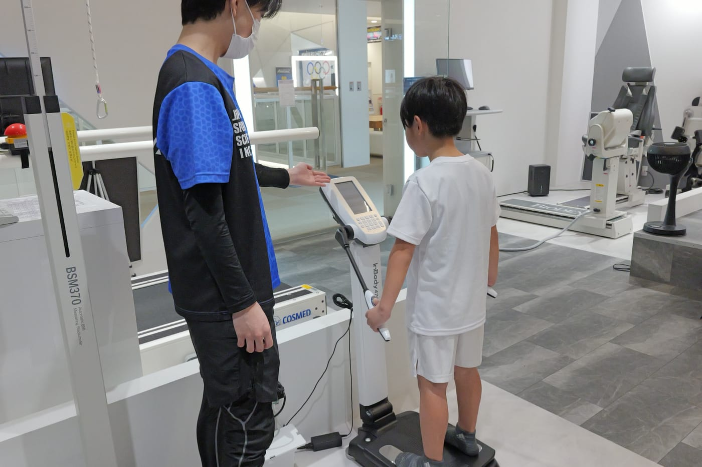

野球
こんな悩み、ありませんか？
- 打球が飛ばない、球速が上がらない
- 盗塁や走塁で、一歩目が遅い
- 速いボールに、目が追いつかない

参加費無料事前予約制
アローズジム2026冬イベント
測る。知る。今のスポーツでの適性が分かる。



写真は実際の測定風景です。
ARROWZ KIDS測って、動いて、みんな笑顔！
※写真はアローズでの過去の測定会・指導風景です。
今回は4つの競技にしぼって開催
こんな悩み、ありませんか？
こんな悩み、ありませんか？
こんな悩み、ありませんか？
こんな悩み、ありませんか？
陸上を習っていなくても大丈夫！「かけっこで速くなりたい」「運動会で1位になりたい」というお悩みにも対応します。
※測定は5項目すべて行い、結果説明でそれぞれの競技に合わせた見方をお伝えします。
今の力から、競技の中での強みが分かる。
スポーツごとに、伸ばしたい力をアドバイス。
自分に必要なトレーニングのヒントに。
筋肉量と運動習慣に合わせてアドバイス。
ひとつでも当てはまったら、
まずは無料で測ってみよう！
スタッフが動きを確認し、今のスポーツで活躍するためのヒントや、自分に合ったトレーニング・食事のヒントをお伝えします。競技歴や運動の得意・不得意を問わずご参加いただけます。

アローズスポーツ科学センターでは、スポーツ科学の第一人者である福永哲夫を筆頭に、研究員が野球・サッカー・バスケットボールなどのプロ・オリンピック選手をサポートしてきました。そのデータから、競技ごとの基礎体力の特性を見出しています。
速さ・持久力・跳ぶ力・眼の力・体組成を、専用機器で数値にします。
プロ・オリンピック選手などのサポートで分かった、競技ごとの基礎体力の特性と照らし合わせます。
今のスポーツでの強み・適性と、活躍するために伸ばしたい力が分かります。
※図はイメージです。
ダッシュの最高速度
専用ランニングマシンで全力ダッシュし、最高速度を測ります。

間欠的持久力
複数回のダッシュで、スピードを維持する力を確認。サッカーやバスケで使う持久力が分かります。
跳ぶ力・脚の力の使い方
脚の力とバネの使い方を分析し、足を速くするための課題を見つけます。跳ぶ力は、走る速さや切り返しの速さとも関係しています。
動体視力・周辺視
動くものを見分ける力と、周囲の情報を捉える力を確認します。競技によって、求められる眼の力は異なります。

筋肉量・食事量の目安
筋肉量と運動習慣をもとに、食事量・たんぱく質量の目安と、成長に配慮した体重管理のポイントをお伝えします。
基礎体力を数値にして、記録とチャートで得意・苦手を確認。今やっているスポーツの中での強み・適性もお伝えします。
※用紙・数値は見本です。当日は今回の測定内容に合わせた結果をご案内します。
受付をして、測定の準備をします。
どんな測定をするか、スタッフが分かりやすく説明します。
ダッシュ・ジャンプ・眼の力など、5つの測定に挑戦します。
結果用紙を見ながら、今のスポーツでの適性や活躍のヒントをお伝えします。
※空き枠カレンダーは確認時点の目安です。最新の空き状況は公式LINEまたはお電話でご確認ください。
参加費無料・事前予約制です。ご都合のよい方法をお選びください。
公式LINEを開き、「スポーツ適性検査 参加希望」とお送りください。
LINEを使わない方はお電話で。「スポーツ適性検査の予約」とお伝えください。
今回は、野球・サッカー・バスケットボール・陸上（走ること）の4つの競技にしぼって行います。
はい。陸上クラブなどに通っていなくても、「かけっこで速くなりたい」「運動会で活躍したい」というお子さまもご参加いただけます。
はい。イベントだけの参加も歓迎です。終了後、ご希望の方にはジムをご案内します。
はい。今のスポーツで活躍するためのヒントや、スポーツごとのアドバイスをお伝えします。
はい。兄弟・お友達・親戚同士など、1組3名まで同じ60分の枠でご参加いただけます。年長〜高校3年生の、アローズの会員ではない方が対象です。お申し込みは代表の方からまとめてお送りください。
予約時にご案内します。体調やケガなど気になることも事前にお知らせください。
空き枠を確認して、ご希望の日時をお知らせください。